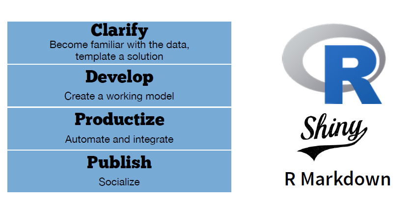
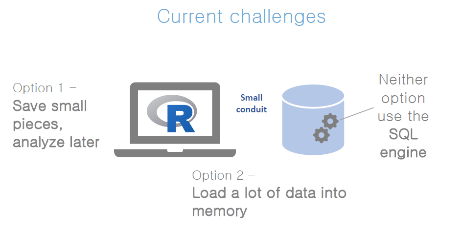
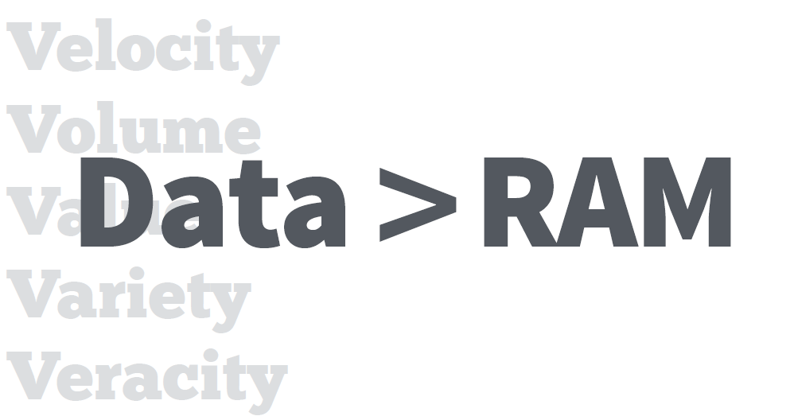
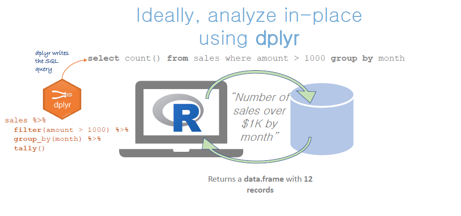
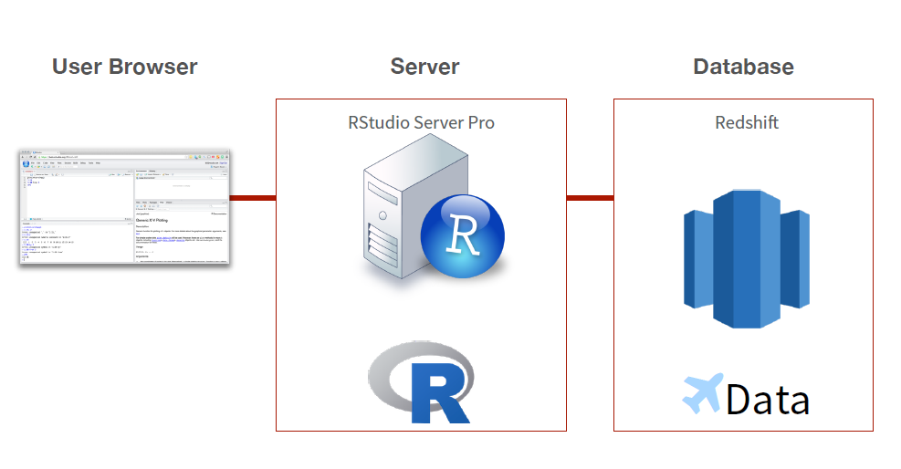

Collect random sample of training data
Fit a model to the sample (in R)
Score against test data (in DB)
Package that provides data manipulation syntax for R. Comes with built-in SQL backend:
Connects to DBMS’s
Transforms R code to SQL, sends to DBMS to run in DBMS
Collect results into R


분석목적에 맞는 형태의 데이터로 사전에 가공하여 분석마트를 생성
데이터 규모 축소
다수의 작은 데이터를 합쳐서 처리해야할 파일수를 줄이기
비정형데이터를 정형데이터로 변환(XML -> CSV)
2 High Performance 기술 활용
전체 데이터를 독립적인 단위로 나누어 분산처리
병렬처리 기술 활용
database 등 빅데이터 기술 활용
easy way : RSQLite, MonetDB
hard way: 스파크, 하둡 클러스터, GPU 등 빅데이터 기술 활용
다수 기관들의 빅데이터 사업이 실제로는 복잡한 빅데이터 기술을 적용하지 않고 분석 가능한 사례가 많음
개인연구 또는 소규모 프로젝트에는 easy way를 적극 활용할 필수
| 처리속도 | 메모리 이내(50%, 1~4G) | 10~100 Giga | tera 급 |
|---|---|---|---|
| 배치, 분석 | dplyr | DB(RSQLite) | Sparklyr with Hadoop Cluster |
| near 실시간 | Parallel, DT, feather | Monetdb | Empala 등 … |
부동산 실거래 데이터
비정형 -> 정형화
다수의 작은 파일 -> 하나의 파일로 합치기
데이터 구조 변화
parallel computation
Flight 데이터
분석마트 생성
데이터 구조 변화
data.table, feather
RSQLite, MonetDB
한국거래소 상장주식 주가 크롤링